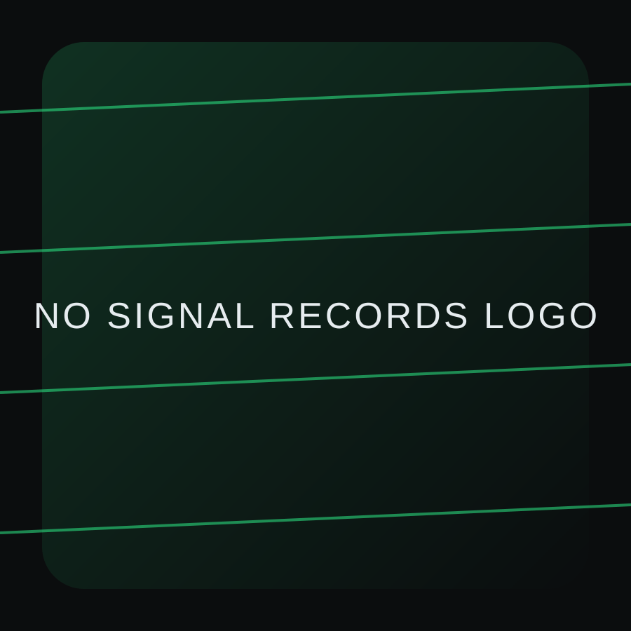

Fase 01 — Identità
Costruzione del progetto, definizione estetica, creazione della prima release. Nessuna distrazione, solo fondamenta.

NO SIGNAL RECORDS
independent label / project studio
Independent label · working in progress
no noise
only signal
NO SIGNAL RECORDS è il centro operativo di un progetto artistico e di una label indipendente. Un’identità unica, un percorso chiaro, crescita graduale. Ogni sezione del sito racconta cosa stiamo costruendo oggi e quale direzione stiamo tracciando per il futuro.
Nessuna promessa vuota, nessuna estetica di facciata: qui trovi un sistema in evoluzione, pensato per durare e crescere con il catalogo e con la visione dell’artista fondatore.
Questo sito è il punto di riferimento ufficiale di NO SIGNAL RECORDS. Qui trovi identità, release e visione in un unico spazio: nessun link dispersivo, nessun rumore inutile. Il progetto nasce per essere coerente con il suono e con l’immagine che lo rappresentano, senza compromessi.
Ogni pagina è una dichiarazione: ciò che esiste oggi e ciò che è in costruzione. La crescita è prevista, ma sempre sotto controllo.
NO SIGNAL RECORDS è pensato per essere il punto di accesso principale ai contenuti e ai social. Un solo link, nessuna dispersione.
I link ufficiali verranno aggiornati quando la release sarà attiva su tutte le piattaforme. Questo hub resta il riferimento principale.
Fase 01 — Identità
Costruzione del progetto, definizione estetica, creazione della prima release. Nessuna distrazione, solo fondamenta.
Fase 02 — Catalogo
Sviluppo del primo album, consolidamento della presenza digitale, espansione controllata.
Fase 03 — Apertura
Collaborazioni selezionate e nuovi artisti solo quando l’identità sarà stabile.
Texture digitali, ritmi asciutti, dinamiche controllate. NO SIGNAL RECORDS nasce dall’esigenza di costruire un suono riconoscibile, capace di restare coerente anche mentre il progetto cresce.
Ogni release è un capitolo che definisce il linguaggio e lo consolida, senza ripetizioni inutili.
Glitch urbano, palette scura, segni grafici essenziali. Il visual non è decorazione, ma parte del messaggio. L’obiettivo è mantenere un’estetica solida che regga il tempo e l’evoluzione della label.
Questo sito è pensato come fondazione. Le nuove release, gli artisti futuri e i contenuti aggiuntivi verranno integrati senza dover ricostruire l’identità da zero.